Dokumentation samt skitser & rentegning fra illustator
State machine diagram
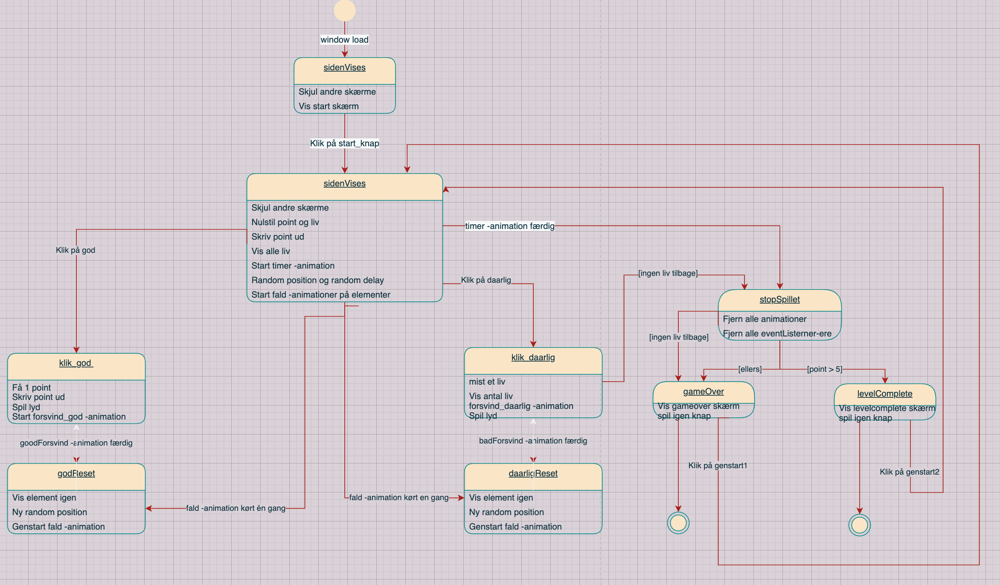
Aktivitets diagram

Inspiration
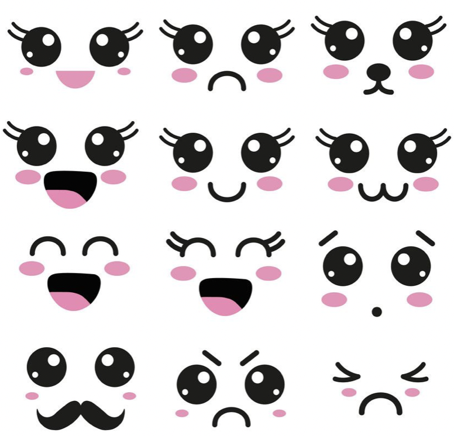
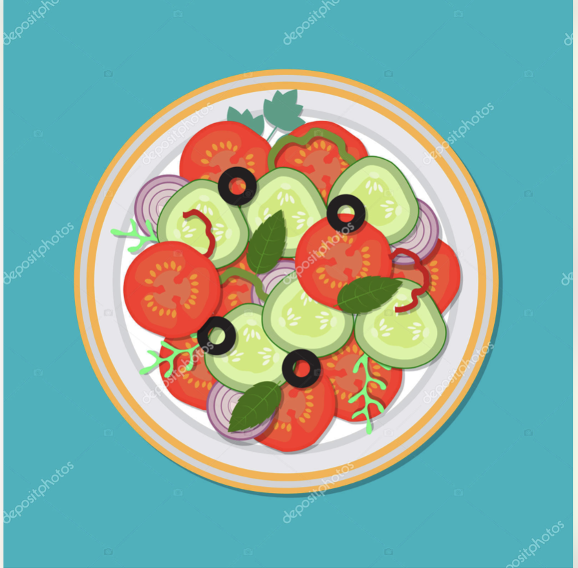
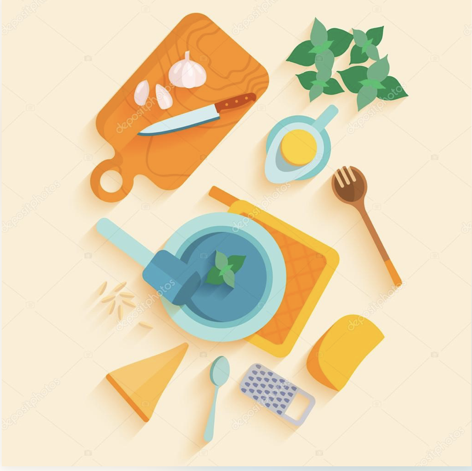
Figurdesign process
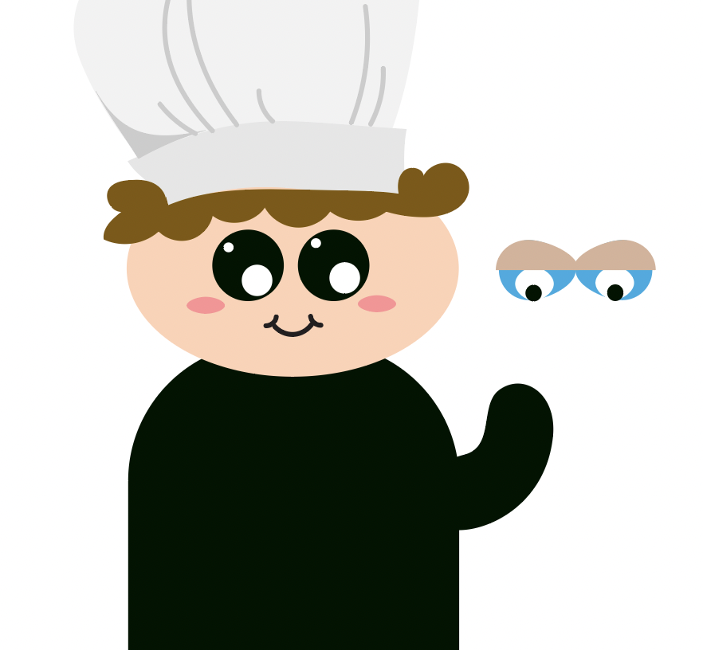
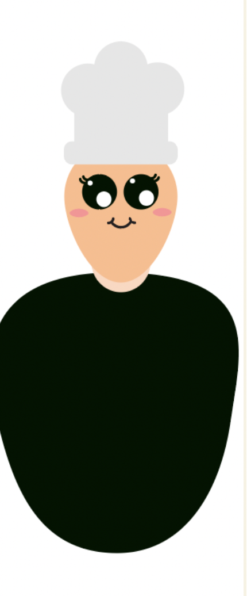
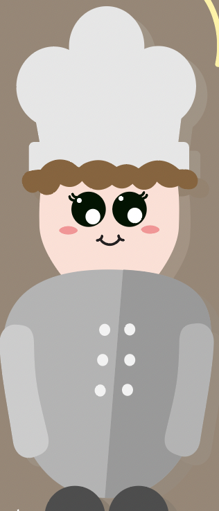
Spil skærm process
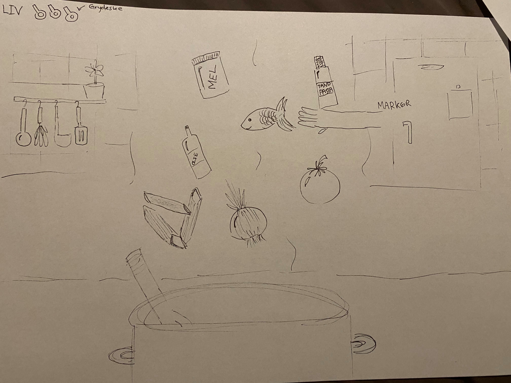
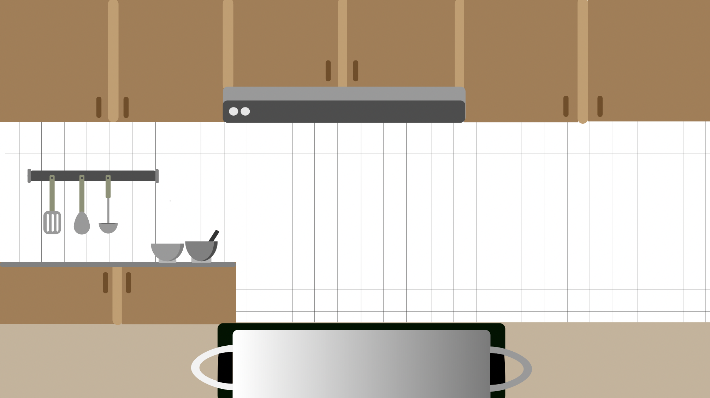
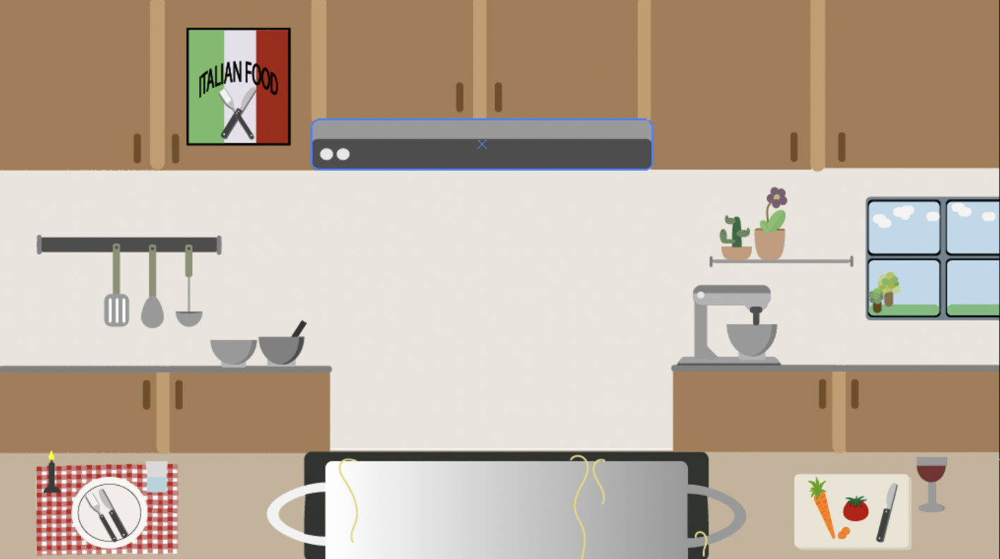
Titel skærm process
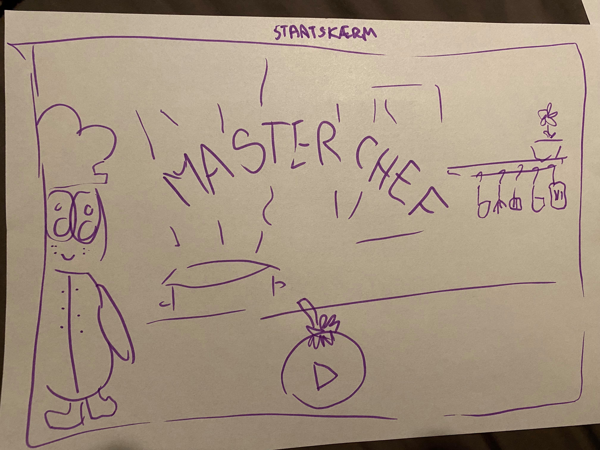
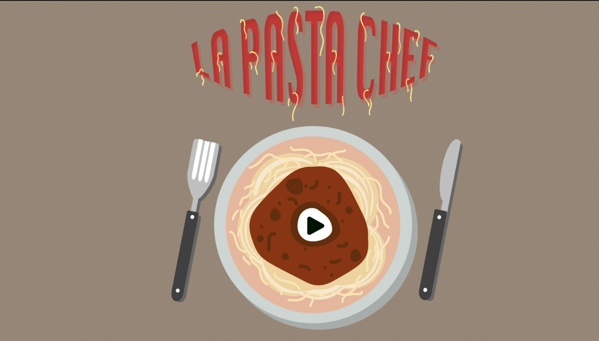
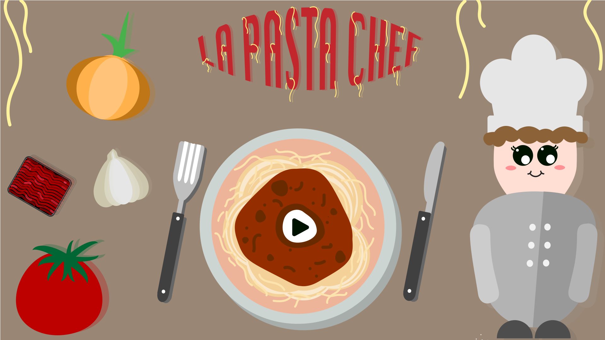
- I tema 4 blev vi introduceret til skitserings samt idegenererings teknikker til den kreative idéudvikling, dette var en vigtig fase for mig for at kunne optimere den første del af proces og have et godt stiludgangspunkt. Skitsering og udvikling af ide og visuelt koncept var givende processer samt paper prototyping af layout og figurelementer.